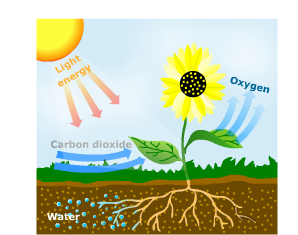
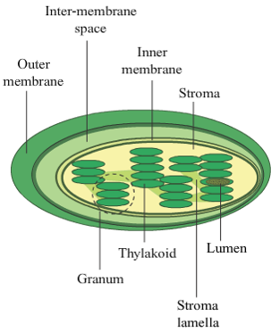

Question:1
Write two examples for each of the following.
| 1. |
Modes of nutrition |
.................... |
.................... |
| 2. |
Parasitic plants |
.................... |
.................... |
| 3. |
Saprophytic plants |
.................... |
.................... |
| 4. |
Insectivorous Plants |
.................... |
.................... |
| 5. |
Symbiotic association |
.................... |
.................... |
Solution:
- Autotrophic, Heterotrophic
- Cuscuta, Mistletoe
- Indian Pipe, Coral root
- Drosera, Venus flytrap
- Lichens, Pea plant
Question:2
Write one word for the following.
| 1. |
The substance that is broken down in the body to obtain energy |
.................... |
| 2. |
The green pigment present in leaves |
.................... |
| 3. |
Structures in leaves that contain the green pigment |
.................... |
| 4. |
Stacks of thylakoids |
.................... |
| 5. |
Structures that carry water and minerals from the roots to the leaves of a plant |
.................... |
| 6. |
Structures that carry stratch to various parts of a plant |
.................... |
Solution:
- Food
- Chlorophyll
- Chloroplasts
- Grana
- Xylem
- Phloem
Question:3
Which of these is/are required for photosynthesis?
(a) Chlorophyll
(b) Sunlight and water
(c) Carbon dioxide
(d) All of these
Solution:
(d) All of these.
During photosynthesis sunlight is used to convert carbon dioxide and water into oxygen and carbohydrates in presence of chlorophyll.
Question:4
Plants obtain carbon dioxide from the atmosphere through these structures.
(a) Grana
(b) Stroma
(c) Stomata
(d) Thylakoid
Solution:
(c) Stomata
Plants obtain carbon dioxide in atmosphere through structures called stomata present on the underside of leaves.
Question:5
Plant structures that carry food from leaces to the roots are
(a) xylem
(b) phloem
(c) guard cells
(d) both xylem and phloem
Solution:
(b) Phloem
The plant structures, phloem carry the starch produced during photosynthesis from leaves to roots and other parts of the plants.
Question:6
Which of these obtain nutrition from dead and decaying matter?
(a) Parasitic plants
(b) Saprophytic plants
(c) Insectivorous plants
(d) Symbiotic plants
Solution:
(b) Saprophytic plants
Saprophytic plants obtain their nutrition from dead and decayed animal and plant matter.
Question:7
Pea plants form a symbiotic association with a/an
(a) fungus
(b) alga
(c) bacterium
(d) virus
Solution:
(c) Bacterium
Pea plant form a symbiotic association with a bacteria called Rhizobium, which helps to fix atmospheric nitrogen.
Question:8
Match the following.
| Column A |
Column B |
| Autotrophs |
Water |
| Stroma |
Guard cells |
| Phloem |
Green plants |
| Stomata |
Chloroplast |
| Xylem |
Starch |
Solution:
| Column A |
Column B |
| Autotrophs |
Green Plants |
| Stroma |
Chloroplasts |
| Phloem |
Starch |
| Stomata |
Guard cells |
| Xylem |
Water |
Question:9
Describe the process of photosynthesis in green plants with the help of a labelled diagram.
Solution:
Photosynthesis is the process of converting water and carbon dioxide into carbohydrates or starch and oxygen in the presence of sunlight. Plants obtain water from the soil and carbon dioxide from air. Water reacts with carbon dioxide, to form starch and oxygen in the presence of sunlight and the green pigment in leaves called chlorophyll.
The reaction of photosynthesis can be represented as:
Carbon dioxide + Water Starch + Oxygen

Question:10
Describe how green plants obtain the things that are necessary for photosynthesis.
Solution:
The things required for photosynthesis are chlorophyll, sunlight, water and carbon dioxide. Chlorophyll, which absorbs light energy, is present in chloroplasts in the leaves. Plants take atmospheric carbon dioxide through their openings called stomata on the underside of the leaves. Each stoma has two guard cells that swell and move away to open the stoma. The root system of the plants absorbs water from the soil, which reaches the leaves through xylem.
Question:11
Describe the structure of a chloroplast with the help of a labelled diagram.
Solution:
Chloroplasts are structures in the leaves that contain chlorophyll, which is required for photosynthesis. The chloroplast has an outer membrane and an inner membrane. Inside every chloroplast, stacks of discs are present. Each disc is called thylakoid. These contain the pigment, chlorophyll and are helpful in absorbing sunlight. The discs of thylakoid are present in stacks and are called grana. The grana are arranged in a fluid called stroma.

Question:12
Define heterotrophic nutrition. Discuss the different types of heterotrophic nutrition in plants. Give two examples of each type.
Solution:
Heterotrophic nutrition is a mode of nutrition in which an organism is unable to prepare its own food and depends on other organisms for food. The types of heterotrophic plants include:
-
Parasitic plants partially or completely depend on another host plant for their nutrition. E.g. Cuscuta and Mistletoe.
-
Saprophytic plants obtain their nutrition from dead and decaying animal or plant matter. E.g. - Indian Pipe and Coral root.
-
Insectivorous plants mostly obtain their nutrition by trapping and consuming animals, particularly insects. E.g. - Drosera, Venus flytrap and sun dew plant.
-
Symbiotic plants live in association with other organisms to share food and other resources. E.g. - Lichens and leguminous plants.
Question:13
With the help of three examples, discuss how leaves of insectivorous plants are modified to trap insects.
Solution:
Insectivorous plants trap insects and digest them for nutrition. Insectivorous plants have modifications to their leaves to help them trap insects:
- The leaves of bladderwort are slender and have many small, pear shaped bladders that trap insects by sucking them in. The insects are then digested in the bladders.
- The leaves of sundew plant have tentacles, which are long, thin structures having drops of sticky substance called mucilage at their ends. When an insect touches them, it sticks in the mucilage and is then digested.
- The Venus flytrap has leaves with short, stiff hair on their inner surface. On touching the hair, the insects get snap shut in the leaves, where the trapped insect is eventually digested.
Question:14
What do you understand by the term nutrition? Name the two main modes of nutrition.
Solution:
Nutrition is the process by which an organism takes in food and uses it to obtain energy to live and grow.
The two main modes of nutrition are autotrophic and heterotrophic nutrition.
Question:15
What is photosynthesis? Write the reaction that takes place during photosynthesis.
Solution:
Photosynthesis is the process of converting water and carbon dioxide into carbohydrates or starch and oxygen in the presence of sunlight. The reaction of photosynthesis is:
Carbon dioxide + Water Starch + Oxygen
Question:16
What are the general conditions necessary for photosynthesis?
Solution:
The general conditions necessary for photosynthesis include the presence of chlorophyll or the green pigment, presence of light and the availability of water and carbon dioxide.
Question:17
Explain how plants take in carbon dioxide through stomata.
Solution:
Stomata are small openings present on the underside of the leaves. Each stoma is bounded by two guard cells that swell, when there is light and water and then move away from each other to open the stoma. This opening in stoma helps to obtain carbon dioxide from the atmosphere.
Question:18
Differentiate between xylem and phloem.
Solution:
| Xylem |
Phloem |
| Xylem transports water and soluble nutrients from the roots. |
The phloem transport starch produced by photosynthesis in the leaves. |
| The xylem transports raw materials. |
The phloem transports starch. |
Question:19
Differentiate between parasitic and saprophytic plants.
Solution:
| Parasitic Plants |
Saprophytic Plants |
| A parasitic plant depends upon another plant (the host) partially or entirely for nutrition. |
A saprophytic plant gets nutrients from dead and decaying organisms. |
| Parasitic plants have special roots that penetrate the host's stem or roots to directly absorb nutrients. |
Saprophytic plants have fungi in their roots to help break down dead and decaying plant or animal matter. |
| Parasitic plants may have leaves and are usually green. |
Saprophytic plants are generally white and do not have leaves. |
| Parasitic plants grow on other plants, which serve as the host. |
Saprophytic plants generally grow in deep shade in tropical forests. |
| Examples: Mistletoe and Cuscuta. |
Examples: Indian pipe and coral root are common saprophytic plants. |
Question:20
Differentiate between insectivorous and symbiotic plants.
Solution:
| Insectivorous plants |
Symbiotic plants |
| Insectivorous plants trap and consume insects for nutrition. |
Symbiotic plants live in association with other plants/organisms and both benefit from the association. |
| Examples: Venus fly trap and pitcher plant. |
Examples: Rhizobium and lichens. |